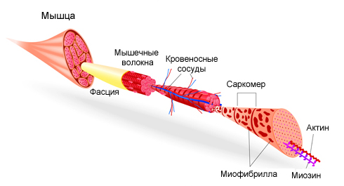

Ранее мы уже рассказали вам о том, что ваши мышцы состоят из миофибрилл (сократительных элементов) и митохондрий (энергетических элементов), и что ваша сила напрямую зависит от первых, а выносливость от вторых. Возникает вполне логичный вопрос - как же тренировать эти самые миофибриллы и митохондрии? Вопрос хороший, правильный и своевременный, однако однозначного ответа на него мы дать не сможем (потому что его пока нет), но подскажем, в каком направлении нужно копать.
Тренировка миофибрилл

Важный момент, о котором стоит сказать в разрезе тренировки миофибрилл, заключается в режиме тренировки при котором предполагается ОТСУТСТВИЕ расслабления мышцы. Если в обычном случае вы начинаете упражнение из точки, где мышца расслаблена, и в неё же возвращаетесь, то в этом режиме, чтобы мышца не расслаблялась, вы убираете эту часть амплитуды, то есть делаете упражнение в неполной амплитуде, держа мышцу всё время под нагрузкой.
Во-первых, интенсивность сокращения мышцы (интенсивность нагрузки в одном конкретном повторении). Чем выше, тем лучше. Если смотреть на любое упражнение с точки зрения силы и выносливости, то, по сути, любое количество повторений свыше одного уже переводит работу мышц с силы на выносливость. Поэтому чем меньше повторений в упражнении вы можете сделать, чем оно тяжелее для вас, тем больше будет его интенсивность. Но здесь нужно внимательно подходить к выбору упражнений и возможному количества повторений, чтобы не перегрузиться и не получить травму.
Во-вторых, интенсивность упражнения. Интенсивность упражнения может быть различной в зависимости от типа упражнения (отжимания и спринт будут давать разную интенсивность) и от темпа выполнения упражнения (отжиматься от пола можно тоже очень интенсивно). Так что здесь возможны варианты.
В-третьих, продолжительность выполнения упражнения. Продолжительность должна быть ДО отказа, то есть до того момента, когда мышцы больше не могут сокращаться (поскольку они потратили весь имеющийся креатин). Здесь нельзя дать конкретные параметры по количеству повторений или по количеству времени выполнения, нужно исходить из собственных ощущений и доходить до отказа.
В-четвертых, интервал отдыха между подходами. Интервал отдыха должен быть от 5 до 15 минут. Важное замечание!!! Отдых должен быть активным, то есть вы должны двигаться и обеспечивать циркуляцию крови по организму для того, чтобы вымывать накопленные в мышцах ионы водорода. Тогда они не будут наносить негативный эффект мышцам. К тому же активный отдых позволяет в разы сократить его продолжительность по сравнению с пассивным (может доходить до 60 минут).
В-пятых, количество подходов. Для развивающих тренировок рекомендуется делать 5-10 подходов для одной конкретной мышцы. Для определения частоты проведения таких тренировок стоит вспомнить о том, что миофибрилла строится (на 90%, основная мышечная часть) в течение 15 дней (примерно) и достраивается (ещё на 10%, сухожильные концы мышцы) ещё в течение 90 дней!
Тренировка митохондрий

В отличие от миофибрилл, для роста митохондрий нужно три главных фактора:
1. Наличие аминокислот в клетке.
2. Наличие кислорода в клетке (чем больше, тем лучше).
3. Отсутствие ионов водорода (чем меньше, тем лучше).
Теперь переходим к параметрам тренировки:
Во-первых, интенсивность сокращения мышцы и интенсивность упражнения. На уровне анаэробного порога.
Во-вторых, продолжительность выполнения упражнения. От 2 до 30 минут.
В-третьих, интервал отдыха. Около 2 минут.
В-четвертых, количество подходов. Чем больше, тем лучше, можно вплоть до 40 подходов за одну тренировку. Ограничителем тут выступают запасы гликогена в организме. Что приятно, так это возможность проводить подобные тренировки хоть каждый день.
Заключение
В заключении сегодняшнего инфопоста мы хотим ещё раз напомнить, что вся эта информация приведена в большей степени для развития вашего кругозора и не предполагает её применение в рамках программы SOTKA. У нашей программы другие цели и другие средства достижения этих целей, у нас не стоит задачи отдельно развивать митохондрии и миофибриллы в конкретных мышцах, а стоит задача повышать общую подготовленность участников, включая выработку правильной моторики движений, развитие ССС, развитие дыхательной системы, развитие координации, внедрение ежедневных тренировок в свой образ жизни и т.д. и т.п.